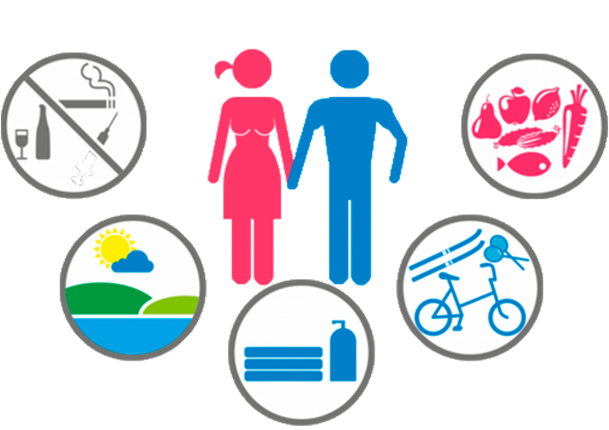

Профилактика употребления психоактивных веществ
Профилактика употребления психоактивных веществ среди школьников и молодежи — это важная задача, которая требует участия семьи, школы и общества. Необходимо проводить образовательные программы, пропагандировать здоровый образ жизни и создавать условия для развития личности.
Профилактика употребления психоактивных веществ среди подростков
Профилактика употребления психоактивных веществ (ПАВ) представляет собой комплекс мер социального, образовательного, психологического и медицинского характера. Эти меры направлены на снижение влияния факторов риска и усиление факторов защиты от наркомании, токсикомании и алкоголизма.
Уровни профилактики
Всемирная Организация Здравоохранения выделяет три уровня профилактики употребления ПАВ:
- Первичная профилактика: Направлена на предупреждение начала употребления ПАВ среди лиц, ранее их не употреблявших. Ориентирована на общую популяцию детей, подростков и молодежи, формирует способность сохранять и укреплять здоровье.
- Вторичная профилактика: Меры, направленные на раннее выявление и intervention для людей, которые уже начали употреблять ПАВ, чтобы предотвратить развитие зависимости.
- Третичная профилактика: Ориентирована на больных, зависимых от ПАВ. Включает предупреждение дальнейшего злоупотребления, уменьшение вреда от употребления и помощь в преодолении зависимости. Также направлена на предотвращение рецидивов заболевания у больных, прекративших употреблять ПАВ.
Стратегии и цели профилактики
Современная концепция профилактики употребления ПАВ среди подростков ставит в центр личность несовершеннолетнего и три основные сферы его жизни: семью, образовательное учреждение и досуг.
Стратегия профилактики включает активные мероприятия, направленные на:
- Формирование личностных ресурсов, обеспечивающих социально-нормативный жизненный стиль и отказ от употребления ПАВ.
- Формирование ресурсов семьи, помогающих воспитанию законопослушного и ответственного поведения, а также поддержку для детей, начавших употреблять ПАВ.
- Внедрение инновационных педагогических и психологических технологий в образовательной среде для развития ценностей здорового образа жизни и раннего выявления случаев употребления ПАВ.
- Развитие социально-поддерживающей инфраструктуры, включающей семью в микросоциальное окружение ребенка "группы риска наркотизации" и ребенка, заболевшего наркоманией.
Для достижения стратегии и целей профилактики решаются следующие задачи:
>- Повышение осведомленности о негативных последствиях злоупотребления ПАВ.
- Развитие системы раннего выявления семей, где подростки злоупотребляют алкоголем или наркотиками.
- Организация профилактических мероприятий с группами риска.
- Организация профилактической работы в трудовых и образовательных коллективах.
- Мотивация на изменение поведения и отказ от употребления ПАВ.
- Формирование негативного отношения к злоупотреблению ПАВ в обществе.
- Формирование личной ответственности за свое поведение.
- Формирование психологического иммунитета к употреблению ПАВ у подростков, их родителей и учителей.
- Формирование навыков здорового образа жизни.
Роль семьи в профилактике
Главную роль в профилактике употребления ПАВ играют взаимоотношения в семье. Важны любовь, взаимоуважение, понимание и поддержка. Родителям рекомендуется:
- Общаться с ребенком, выслушивать его и давать советы.
- Проводить время вместе, заниматься спортом, посещать культурные мероприятия.
- Интересоваться друзьями и занятиями ребенка.
- Ставить себя на место ребенка, чтобы понимать его переживания[5].
Позитивное общение в семье и наличие хобби благоприятно влияют на психологическое состояние человека и являются важными составляющими в профилактике наркомании.
Заключение
Эффективная профилактика употребления ПАВ требует совместных усилий учебных заведений, семьи и общества в целом. Важно формировать у подростков навыки здорового жизненного стиля и уменьшать факторы риска.